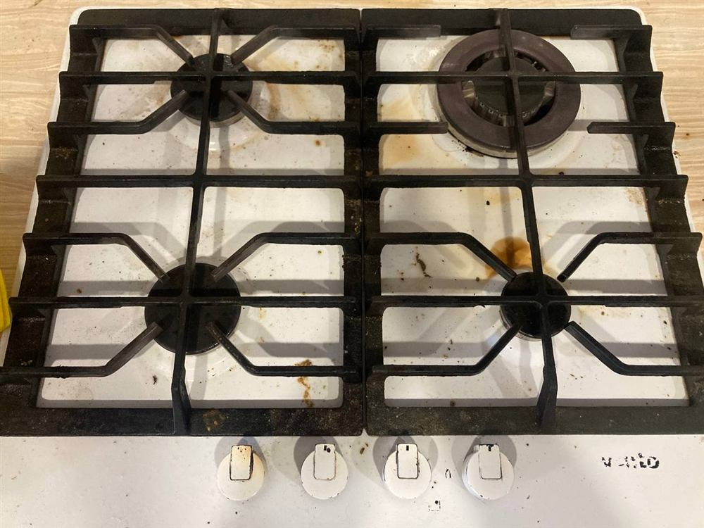
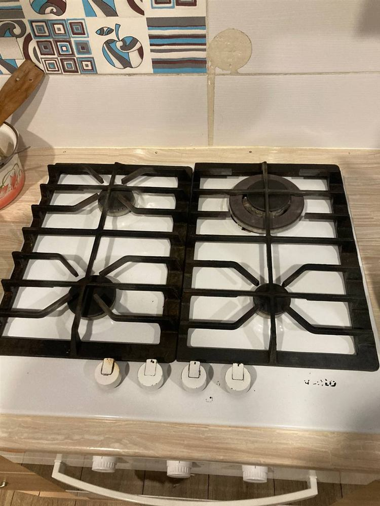

Як відмити варочну поверхню до блиску без подряпин
Молоко втекло, поки ви відволіклись на дзвінок. Цукор із варення бризнув на конфорку і за секунду перетворився на темну кірку. Ви хапаєте губку, тремо сильніше — і за кілька хвилин помічаєте матову плямy там, де щойно терли. На склокерамічній поверхні це вже не відмиється ніколи. Знайомо? Варочна поверхня — одне з тих місць на кухні, де одна необережна дія псує вигляд плити на роки наперед, а «просто потерти сильніше» майже завжди робить гірше.
Чому варочна поверхня бруднится так підступно
Це не звичайний бруд, який просто лежить зверху. Скло нагрівається миттєво, тому цукор чи молоко не забруднюють поверхню — вони буквально запікаються в неї, утворюючи майже монолітний шар. Крапля жорсткої води, що википіла, залишає кільце вапняного нальоту, яке з часом ніби «в'їдається» у структуру скла. А тонка жирова плівка від готування взагалі невидима — доки ви знову не увімкнете конфорку, і вона не перетвориться на коричневу кірку, яку вже треба зішкрябувати.
Тут же ховається різниця між типами поверхонь, про яку мало хто думає, поки не зіпсує плиту. Класична склокерамічна поверхня прощає невеликі помилки — подряпину від металевої губки не завжди видно одразу, і саме тому люди продовжують чистити «як завжди», доки матовість не стане очевидною. Індукційна плита ще вибагливіша: вона гладка й глянцева, тому кожна дрібна подряпина чи розвід кидаються в очі одразу, і зверху виробники наносять спеціальне покриття, яке псується від абразивів набагато швидше, ніж здається. А от газова варочна поверхня має свої больові точки — конфорки, ґратки й стики навколо них, куди жир і нагар затікають і засихають так, що звичайна губка туди просто не дістає.
Що підготувати для чистки — і чого точно уникати
Знадобляться: скребок для склокерамічних поверхонь із лезом під кутом, м'яка мікрофібра, харчова сода, звичайний засіб для миття посуду, засіб для скла або розчин оцту для розводів. Для індукційних плит додатково варто мати спеціальний поліруючий крем.
Категорично не варто використовувати: металеві губки й дротяні мочалки, абразивні порошки на кшталт «Комету», хлорку прямо на гарячу поверхню, а також різкий перепад температур — тобто мокру ганчірку чи холодну воду на щойно вимкнену плиту.
Покроковий алгоритм чистки
1. Дочекайтесь, поки поверхня повністю охолоне — це головна умова, інакше різкий перепад температур може дати мікротріщину. 2. Скребком під кутом приблизно 30° обережно, без тиску, зніміть основний нагар і залишки їжі. 3. На плями від цукру чи пригорілого молока нанесіть пасту з харчової соди й води, дайте постояти 10–15 хвилин. 4. Пройдіться м'якою губкою із засобом для посуду. 5. Наостанок відполіруйте мікрофіброю із засобом для скла — це прибирає розводи й повертає блиск. 6. Для індукційної поверхні раз на тиждень варто пройтись спеціальним поліруючим кремом — він не лише чистить, а й лишає захисну плівку.
Помилки, які псують поверхню назавжди
Металева губка чи абразивний порошок залишають мікроподряпини, які неозброєним оком майже не видно, — але саме в них потім забивається бруд, а поверхня втрачає глянець і стає матовою назавжди. Чистка гарячої плити мокрою ганчіркою — пряма дорога до тріщини через термошок. А якщо цукрова пляма простояла кілька днів, вона встигає буквально «витравити» скло — і жодна сода вже не поверне первісний вигляд, тільки професійна поліровка або заміна поверхні.
Коли домашні методи вже не рятують
Якщо нагар накопичувався місяцями — навколо конфорок, у стику зі стільницею, у пазах газової плити — сода й губка просто топчуться на місці, а спроби «дотерти» зайвим зусиллям частіше закінчуються тими самими подряпинами. Проблема в тому, що застарілий нагар і свіжий бруд — це по суті різні хімічні задачі: те, що знімає плівку жиру за хвилину, роками пригорілу кірку навіть не візьме, а те, що здатне розм'якшити стару кірку, для щоденного бруду вже занадто агресивне і ризикує пошкодити покриття. Вгадати правильну концентрацію й час витримки без досвіду складно, а помилка коштує самої поверхні.
Тут вже питання не в засобі, а в техніці й хімії: професійне прибирання кухні знімає застарілий нагар без ризику для поверхні, а заодно приводить до ладу духовку, витяжку та шафки — те, до чого руки зазвичай не доходять під час щоденного миття плити. Майстри працюють професійною хімією Clinex, розрахованою саме під тип поверхні, і скребками з правильним кутом заточки — тому результат зазвичай видно з першого разу, без пробних заходів «на око».


Прибирання кухні коштує від 260 ₴/м² для невеликих кухонь (до 6 м²), від 200 ₴/м² для кухонь до 10 м² і від 160 ₴/м² для кухонь до 20 м². Духовку чи витяжку можна замовити й окремо. Якщо плануєте генеральне прибирання всієї квартири перед опалювальним сезоном, варочну поверхню теж включають у генеральне прибирання — без доплат за «складні» зони.
Як замовити
ЧистоТак прибирає кухні в Солоному та Києві. Просто залиште заявку — передзвонимо протягом 5 хвилин, уточнимо стан плити (можна навіть надіслати фото) і назвемо точну ціну без жодних зобов'язань. Детальніше про роботу в столиці — на сторінці прибирання у Києві.
Потрібна допомога з прибиранням?
Виїзд по Солоному та Києву. Розрахунок за 5 хвилин.
Замовити прибирання